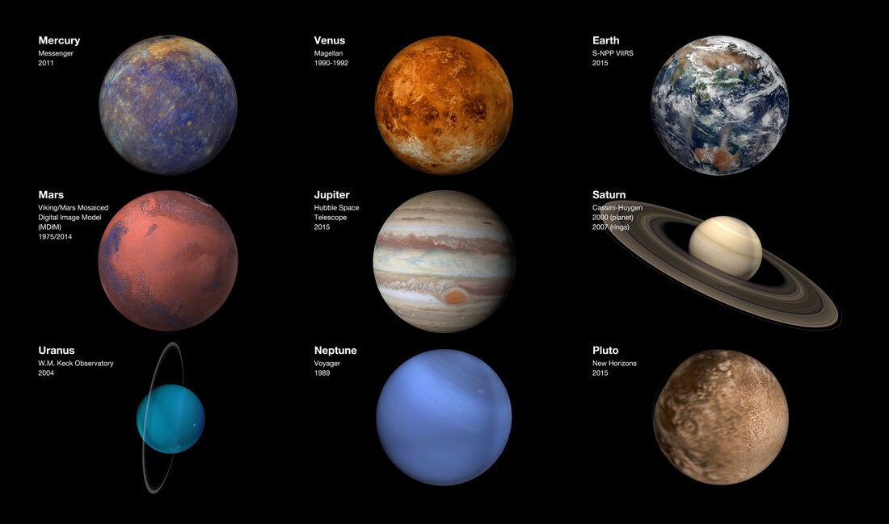

The United States would go on to complete six crewed missions to the moon that landed a total of 12 astronauts (all men) from 1969 to 1972 in a series of Apollo missions numbering up to Apollo 17.

Fun Facts
99.86% of the solar system’s mass is found in the Sun. The majority of the remaining 0.14% is contained within the eight planets.
The four smaller inner planets, also known as the “terrestrial planets”, are primarily composed of rock and metal.
The four outer planets, also known as the “gas giants”, are substantially larger and more massive than the inner planets.
The two innermost gas giants, Jupiter and Saturn, are the largest of the four outer planets and are composed mainly of hydrogen and helium.
The two outermost gas giants, Uranus and Neptune, are composed largely of ices (water, ammonia and methane). Together they are referred to as the “ice giants“.
Other structures of note in the solar system the Asteroid Belt, Kuiper Belt and Oort Cloud.
The solar system consists of the Sun, planets, dwarf planets, moons, and numerous smaller objects such as comets and asteroids.
194 moons, 3,583 comets and 796,289 asteroids have been found in the solar system.